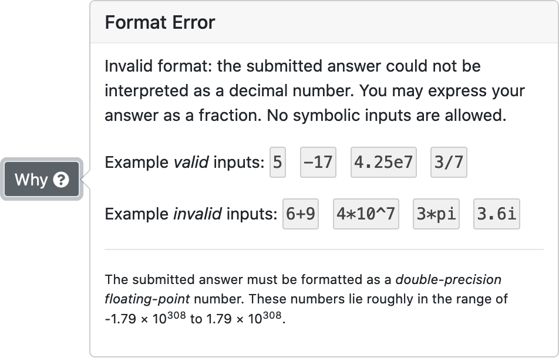
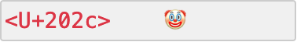
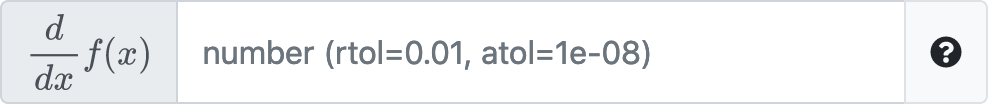

Nicolas Nytko (CS BS '19, CS MS '21) has added some big improvements to PrairieLearn.
One of the most-requested features ever! You can now enter fractions in most places where numbers are input:
You can even enter fractions with decimal points, like 10.4/12.6
If you submit an answer that PrairieLearn can't understand,
like asf#$%J34jkl when a number is expected, you
will now be clearly shown that something is wrong:
Best of all, PrairieLearn doesn't count invalid answers as "attempts", so you don't lose any points!
Clicking on the Why button will give more information on why the answer couldn't be understood, including some example answers that are valid and invalid:
Previously, questions could fail if the instructor changed the question code after you started working. Now PrairieLearn will show a "Missing Input" label instead of an error to ensure the question is able to be displayed:
Input with strange Unicode characters is now displayed so that all characters are visible (using the <U+xxxx> syntax for unprintable characters) and any leading or trailing spaces are clear:
Inputs with "tall" labels will now correctly scale:
